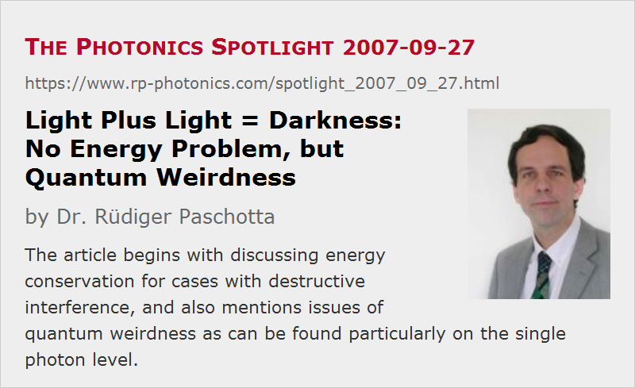

Light Plus Light = Darkness: No Energy Problem, but Quantum Weirdness
Posted on 2007-09-27 as a part of the Photonics Spotlight (available as e-mail newsletter!)
Permanent link: https://www.rp-photonics.com/spotlight_2007_09_27.html
Author: Dr. Rüdiger Paschotta, RP Photonics Consulting GmbH
Abstract: The article begins with discussing energy conservation for cases with destructive interference, and also mentions issues of quantum weirdness as can be found particularly on the single photon level.

Ref.: encyclopedia articles on interference, photons, quantum optics
We don't know it from experience in our everyday life, but still believe it: the superposition of two light beams with equal intensities, equal frequencies and a proper relative phase shift can result in zero optical intensity. We call this destructive interference, and one may describe this with the equation “light + light = darkness”.
Checking the energy balance, one may at first be a bit irritated: light comes in through two beams, carrying some optical power, and no light comes out. So does energy of the light beams disappear? Well, we tend to strongly believe in energy conservation, but how to resolve this puzzle?
The key is to look at concrete situations:
- One may superimpose two light beams (e.g. laser beams) e.g. on a screen, with the two beams coming from slightly different angles. We then get an interference pattern, with zero intensity in the dark fringes, but four times the intensity of a single beam in the bright fringes. (Why four times, not two times? Because the amplitude is doubled, resulting in four times the intensity.) The overall power on the screen (i.e., the spatially integrated total intensity) is then just the sum of the powers of the two beams. The period of the fringe pattern depends on the angle between the beams, and one can show via a simple calculation that when the incoming beams did originally not overlap, the relative phase will vary so much on the screen that you get at least a dark and a bright fringe, not e.g. darkness everywhere on the screen.
- To avoid the spatial variation of relative phase, we need to have collinear beams. But how to superimpose them in such a way, if they originally have an angle of e.g. 90° between them? Use some beam splitter, for example, i.e. a partially transmissive laser mirror, oriented at 45° to the input beams. You will see then that you get two outputs, not just one. By properly adjusting the relative phase of the input beams, you can get complete darkness in one of the outputs (assuming equal intensity patterns and powers of both beams). Then, however, all the power goes into the other output: you get constructive interference there. By the way, it is instructive to consider which restrictions on the phase of transmitted and reflected beams any beam splitter has to obey in order to guarantee energy conservation, and to check how real beam splitters do that. Consider e.g. the Fresnel reflection on a glass/air interface, and you will see that the additional π phase shift for a beam coming from inside the glass is essential.
So far, that's all classical wave optics, and once you have swallowed that light behaves like waves, you will no longer find destructive interference so puzzling. Things get really weird, however, in experiments with single photons. Consider an interferometer, set up for destructive interference in one output port, and a single photon being sent into the device. One might think that destructive interference can not happen in that case, since the photon can go only through one of the two interferometer ports, but experiments tell the opposite. That shows quite clearly that photons should not be naively identified with wave packets. (Also don't do that with electrons or atoms, please!) To calculate what happens, we always have to assume that a beam splitter sends some wave stuff into each output, even when it receives a single photon only. This holds, even though we have never seen half a photon in a light beam (or half an electron, if you use those). There is a significant number of interesting quantum optics experiments in that area, and Google presents you with interesting reading when fed e.g. with “single photon interferometer”. Such experiments often involve photon pairs, and quantum entanglement is often essential to understand them.
This article is a posting of the Photonics Spotlight, authored by Dr. Rüdiger Paschotta. You may link to this page and cite it, because its location is permanent. See also the RP Photonics Encyclopedia.
Note that you can also receive the articles in the form of a newsletter or with an RSS feed.
Questions and Comments from Users
Here you can submit questions and comments. As far as they get accepted by the author, they will appear above this paragraph together with the author’s answer. The author will decide on acceptance based on certain criteria. Essentially, the issue must be of sufficiently broad interest.
Please do not enter personal data here; we would otherwise delete it soon. (See also our privacy declaration.) If you wish to receive personal feedback or consultancy from the author, please contact him e.g. via e-mail.
By submitting the information, you give your consent to the potential publication of your inputs on our website according to our rules. (If you later retract your consent, we will delete those inputs.) As your inputs are first reviewed by the author, they may be published with some delay.
|  |
If you like this page, please share the link with your friends and colleagues, e.g. via social media:
These sharing buttons are implemented in a privacy-friendly way!